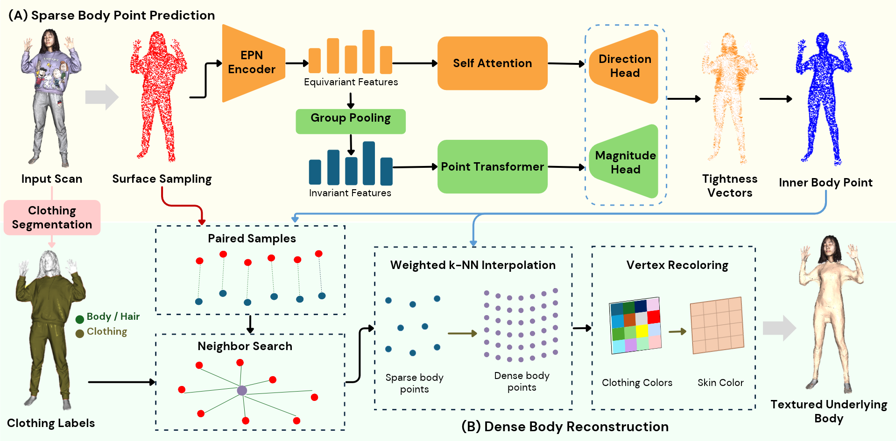
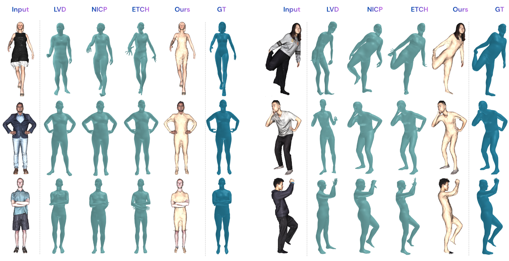
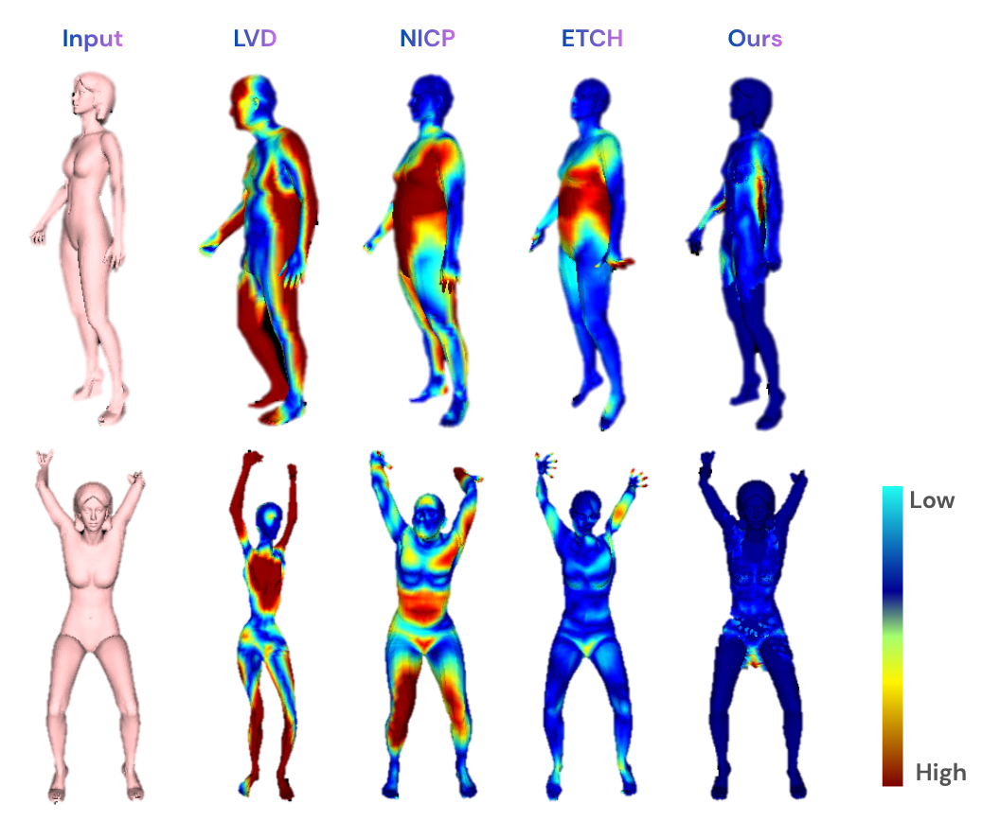

Textured Underlying Body Reconstruction Using Equivariant Point Network
Abstract
Body shape recovery is critical in reconstructing a full body after the removal of clothing. Diffusion-based methods can synthesize geometry and skin texture for occluded body parts, but often produce inconsistent body shapes in hallucinated regions. Parametric body fitting methods can produce accurate body estimates but omit personal details. This study proposed a sparse-to-dense reconstruction method based on clothing tightness fields to recover body geometry while preserving individual details. Sparse stage predicts displacement vector from cloth to body surface using locally approximate SE(3)-equivariant features. Dense stage propagates these predictions via weighted interpolation and restricts the displacement to only clothing vertices. Experiments are conducted to compare the proposed method against existing SMPL fitting methods on underlying body reconstruction across diverse poses and clothing categories.
Methodology

TextureInner recovers a textured underlying body from a clothed scan in two stages.
(A) Sparse Body Point Prediction. The input scan is sampled into sparse surface points. An EPN encoder extracts SE(3)-equivariant features and send it to the direction head and a magnitude head to predict a tightness vector that moves each surface point inward to its body point.
(B) Dense Body Reconstruction. The paired samples form a sparse displacement field, which weighted k-NN interpolation propagates to every scan vertex to give output vertices. Clothing segmentation labels limit this update to clothing vertices, so the body and hair keep their original geometry and texture, while clothing vertices are recolored with skin color to produce the textured underlying body.
Results


BibTeX
@article{fung2026textureinner,
title={Textured Underlying Body Reconstruction Using Equivariant Point Network},
author={Fung, Yi Wei and Lim, King Hann and Phang, Jonathan Then Sien},
journal={TO BE CONFIRMED},
year={2026}
}